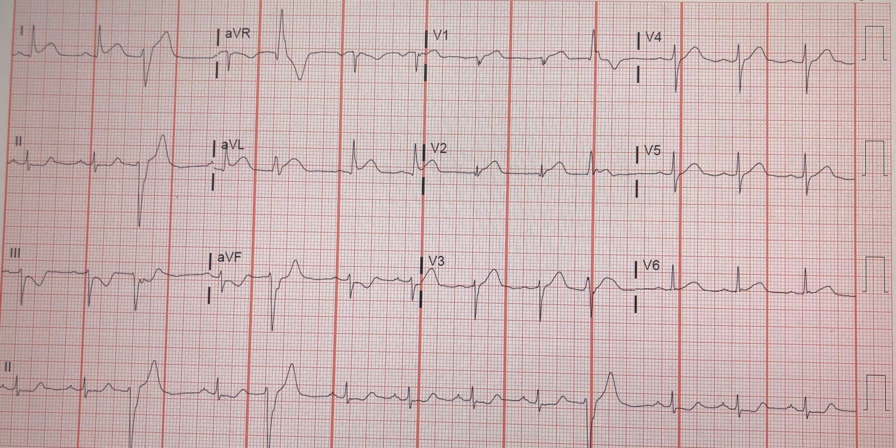
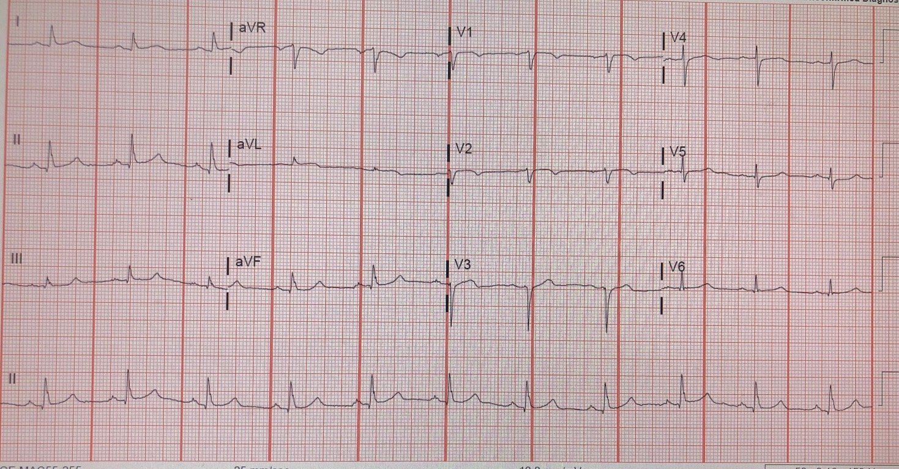
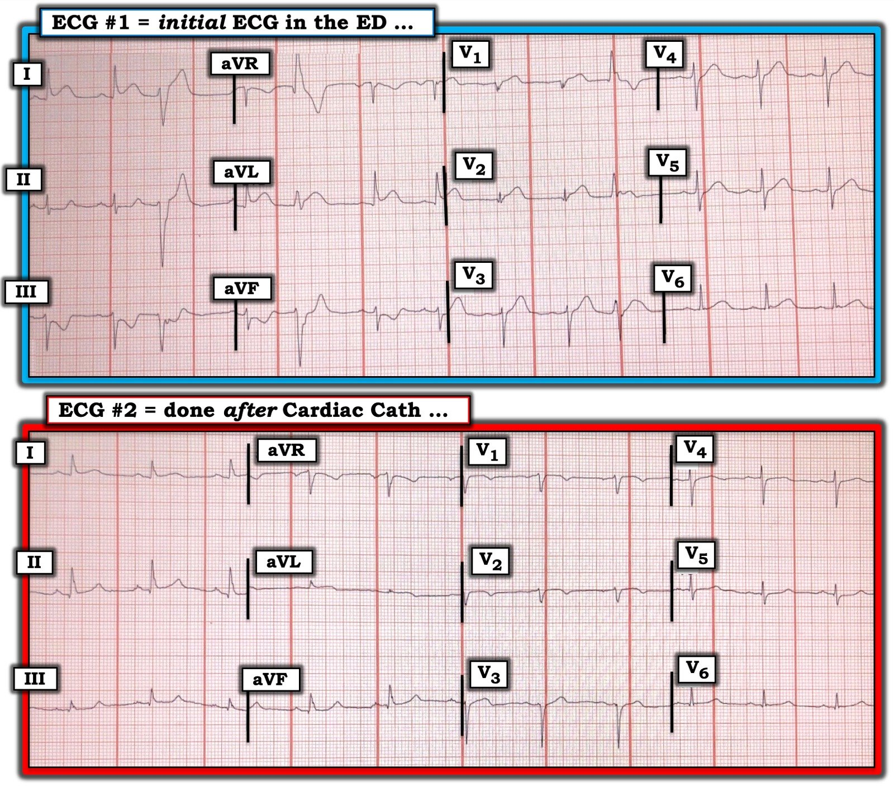

13/08/2019 — Điện tâm đồ đã đúng. Chụp mạch vành thì không.
Bản dịch tiếng Việt của bài "The ECG was correct. The angiogram was not." – Dr. Smith’s ECG Blog. Giữ nguyên toàn bộ 5 hình ảnh của bản gốc.
Ca này do Cam Mosley và Michael Truax, Chương trình Nội trú LSU-Baton Rouge, gửi đến.
Nam 74 tuổi, có tiền sử nhồi máu cơ tim nhiều năm trước, đến viện vì đau ngực và buồn nôn.
Một điện tâm đồ đã được ghi:


Diễn giải của tôi (và của họ: họ đã kích hoạt phòng thông tim (cath lab)):
Rõ ràng đây là tắc LAD đoạn gần (OMI) kín đáo.
Vì sao?
— ST chênh lên kín đáo ở I, aVL, V2
— Sóng T tối cấp (hyperacute T waves) ở aVL, V2, V3
— Sóng Q ở V2, điều luôn luôn bất thường
— ST chênh xuống soi gương (reciprocal) ở III, aVF. Vì vậy, ST chênh lên ở V2 không thể là bình thường.
Đây là kết cục anh ấy gửi đến:
Thông tim âm tính, ngoài hẹp LAD 40%.
Họ cũng đã xem động mạch chủ và không có vấn đề gì.
Troponin ban đầu = 0.02 ng/mL (giá trị tham chiếu tối đa 0.030).
Đây là phản hồi của tôi:
“Các điện tâm đồ sau đó cho thấy gì? Vẫn như cũ? Hay đã hồi phục? Đó là mấu chốt.
LAD có thể bị tắc trong thời gian ngắn mà troponin âm tính và không thấy huyết khối
(huyết khối tự tiêu). Nhưng nếu đúng như vậy thì điện tâm đồ sẽ hồi phục. Nếu
điện tâm đồ vẫn như cũ, thì đó thực sự là dương tính giả. Nếu điện tâm đồ hồi phục, thì nó thực sự là đúng như vẻ ngoài của nó: tắc LAD, dù chỉ ngắn (thoáng qua).”
Vì vậy anh ấy gửi điện tâm đồ sau thông tim:


Như bạn thấy, chụp mạch vành không phải là trọng tài cuối cùng của hội chứng vành cấp (ACS). Chụp mạch vành đôi khi không cho thấy bằng chứng nào của ACS. Huyết khối tự tiêu và có thể không để lại bất kỳ tổn thương thủ phạm nào nhìn thấy được. Tuy không thường gặp, điều này không phải là hiếm.
Trong nghiên cứu này, khoảng 10% các trường hợp STEMI thoáng qua (transient STEMI) không tìm thấy thủ phạm. Số liệu đó nằm ở Bảng 1 của bản thảo toàn văn này.
Early or late intervention in patients with transient ST‐segment elevation acute coronary syndrome: Subgroup analysis of the ELISA‐3 trial (Can thiệp sớm hay muộn ở bệnh nhân hội chứng vành cấp có ST chênh lên thoáng qua: phân tích phân nhóm của thử nghiệm ELISA‐3)
Phải sử dụng mọi dữ liệu sẵn có, bao gồm cả điện tâm đồ, để xác định điều gì đã xảy ra.
Chẩn đoán cuối cùng?
Nếu troponin vẫn dưới ngưỡng tham chiếu 99%, thì đó sẽ là đau thắt ngực không ổn định. Nếu troponin tăng vượt ngưỡng đó rồi mới giảm, thì đó sẽ là tổn thương cơ tim cấp do thiếu máu cục bộ, mà theo định nghĩa chính là nhồi máu cơ tim cấp. Nếu đó là hậu quả của nứt vỡ mảng xơ vữa, thì đó là nhồi máu cơ tim típ I. Biểu hiện lâm sàng sẽ là một trong hai: hoặc đau thắt ngực không ổn định, hoặc nhồi máu cơ tim típ I, ngay cả khi không tìm thấy thủ phạm trên chụp mạch vành.
Xem bài này để biết thêm một ca OMI khác có chụp mạch vành âm tính, và đây là thêm các tài liệu tham khảo:
Inferior hyperacute T-waves and ST elevation. Angiogram is normal. What happened? (Sóng T tối cấp và ST chênh lên thành dưới. Chụp mạch vành bình thường. Chuyện gì đã xảy ra?)
Thư mục tài liệu, kèm tóm tắt đã biên tập
Có 821 lần kích hoạt phòng thông tim và 86% được điều trị bằng tái thông mạch cơ học. Ở 76 bệnh nhân (8.5%), không ghi nhận hẹp động mạch vành. Các quan sát ghi nhận được trên chụp mạch bao gồm co thắt mạch vành (6.6%) và cầu cơ (5.3%). Trong thời gian theo dõi trung bình 11.2±6.4 tháng, một bệnh nhân bị nhồi máu cơ tim cấp cần can thiệp mạch vành. Tất cả các bệnh nhân khác không có bất kỳ biến cố tim nào.
Bài báo 2, toàn văn
Trong số 898 bệnh nhân được kích hoạt phòng thông tim để PCI tiên phát, có 26 bệnh nhân (2.6%) có kết quả chụp mạch vành bình thường. Trong số này, chẩn đoán ra viện là nhồi máu cơ tim nhỏ ở bảy bệnh nhân (0.7%), viêm (màng ngoài tim-)cơ tim cấp ở năm bệnh nhân, bệnh cơ tim giãn ở bốn bệnh nhân, tăng huyết áp kèm phì đại thất trái ở ba bệnh nhân, thuyên tắc phổi ở hai bệnh nhân và đọc sai điện tâm đồ (tức là không có bệnh tim) ở năm bệnh nhân. Bảy bệnh nhân bị nhồi máu nhỏ được chụp mạch vành trong vòng 30 phút đến 90 phút sau khi các dấu hiệu thiếu máu cục bộ cấp đã hết hoàn toàn, và do đó không có phim chụp mạch nào được thực hiện trong lúc đau. Không ai trong số 898 bệnh nhân được thông tim khi đang có triệu chứng thiếu máu cục bộ có kết quả chụp mạch vành bình thường. Không thấy trường hợp nào co thắt mạch vành tự phát là nguyên nhân duy nhất (không có xơ vữa động mạch vành nền) của nhồi máu đang tiến triển. Vì vậy, nguyên nhân của bảy ca nhồi máu nhỏ ở các bệnh nhân có chụp mạch vành bình thường vẫn chưa chắc chắn.
Đặc điểm của 690 bệnh nhân liên tiếp được cho là STEMI và được chuyển để PCI tiên phát. 87 bệnh nhân (13%) có động mạch vành bình thường trên chụp mạch và được so sánh với các bệnh nhân có tổn thương thủ phạm trên chụp mạch (nhóm chứng; n = 594). Chín bệnh nhân có bệnh mạch vành đáng kể nhưng không xác định được tổn thương thủ phạm đã bị loại ra. Điện tâm đồ của cả hai nhóm được 2 bác sĩ tim mạch đọc lại, những người không biết kết quả chụp mạch. Khi chuyên gia đọc lại điện tâm đồ, 55% bệnh nhân ở nhóm động mạch vành bình thường có tiêu chuẩn ST chênh lên của STEMI (so với 93% ở nhóm chứng), nhưng điện tâm đồ chỉ được cả hai người đọc coi là phù hợp với chẩn đoán STEMI ở 33% (so với 92% ở nhóm chứng) Blốc nhánh trái tương quan độc lập với động mạch vành bình thường trong phân tích đa biến (tỷ số chênh cho STEMI 0.016). Chẩn đoán ra viện ở nhóm động mạch vành bình thường chủ yếu là viêm màng ngoài tim (n = 72; 83%), nhưng các chẩn đoán này không được các tác giả thẩm định. Các chẩn đoán khác là viêm cơ tim ở 3 bệnh nhân (3%), bệnh cơ tim Takotsubo ở 2 bệnh nhân (2%), nghi co thắt mạch vành thứ phát do tiêm chích ma túy tĩnh mạch ở 2 bệnh nhân (2%), nhồi máu cơ tim cấp không rõ nguyên nhân ở 1 bệnh nhân (1%), bệnh cơ tim giãn ở 1 bệnh nhân (1%), thuyên tắc phổi diện rộng ở 1 bệnh nhân (1%), sỏi mật ở 1 bệnh nhân (1%) và viêm phổi ở 1 bệnh nhân (1%).
Chẩn đoán thay thế có khả năng nhất mà cả hai người đọc đưa ra cho các điện tâm đồ không phải nhồi máu cơ tim cấp ở nhóm động mạch vành bình thường là thay đổi ST biến thể bình thường (25% với người đọc 1 và 26% với người đọc 2) và bất thường tái cực sớm (25% với người đọc 1 và 14% với người đọc 2).
Hồ sơ bệnh án của 941 bệnh nhân được chụp động mạch vành vì nghi ACS trong vòng 48 giờ từ khi khởi phát đã được xem xét kỹ lưỡng. Ở 70 bệnh nhân (7.4%, 35 nam) không ghi nhận bệnh động mạch vành (CAD). Các cơ chế thay thế gây thiếu máu cục bộ cơ tim cấp bao gồm bất thường động mạch vành (7 bệnh nhân, 10%), co thắt mạch vành (10 bệnh nhân, 14.3%), bóc tách động mạch vành tự phát (2 bệnh nhân, 2.8%), thuyên tắc nghịch thường qua lỗ bầu dục còn thông (4 bệnh nhân, 5.7%), thuyên tắc từ nhĩ trái hoặc van động mạch chủ vôi hóa (4 bệnh nhân, 5.7%), mất cân bằng giữa nhu cầu và cung cấp oxy (20 bệnh nhân, 28.5%), sa van hai lá (11 bệnh nhân, 15.7%). Không tìm thấy cơ chế thay thế nào ở 12 bệnh nhân (17.1%). Không có CAD là một phát hiện không thường gặp ở bệnh nhân được chụp động mạch vành vì ACS.

===================================
BÌNH LUẬN CỦA TÔI, bởi KEN GRAUER, MD (13/8/2019):
===================================
Một ca tuyệt vời của Dr. Smith — mà tiêu đề đã nói lên tất cả: “Điện tâm đồ đã đúng; chụp mạch vành thì không”. Như Dr. Smith nói, hầu như không có gì phải nghi ngờ rằng trong bối cảnh đau ngực mới khởi phát ở người đàn ông 74 tuổi có tiền sử bệnh mạch vành này — điện tâm đồ ban đầu ( = điện tâm đồ #1 trong Hình 1) thể hiện OMI cấp do tắc LAD đoạn gần.
- Để cho rõ — tôi đã bỏ các dải nhịp chuyển đạo II dài, và đặt điện tâm đồ ban đầu và bản ghi sau thông tim cạnh nhau trong Hình 1. Tôi làm như vậy vì việc so sánh từng chuyển đạo của 2 bản ghi này KHẲNG ĐỊNH từng nhận định của tôi dưới đây.
- Tôi xin bổ sung những điều sau vào phần bàn luận xuất sắc của Dr. Smith …


SUY NGHĨ CỦA TÔI: Dr. Smith đã ghi nhận bất thường ở 6 chuyển đạo trên điện tâm đồ ban đầu ( = điện tâm đồ #1). Theo tôi — có 11 (trên 12) chuyển đạo ở điện tâm đồ #1 chắc chắn bất thường + bất thường về nhịp — tất cả gộp lại có giá trị chẩn đoán OMI cấp cho đến khi chứng minh được điều ngược lại.
- Có 3 PVC muộn trong chu kỳ (= cuối tâm trương) (late-cycle PVC) ở điện tâm đồ #1 (ở các chuyển đạo ghi đồng thời I,II,III; aVR,aVL,aVF; và V1,V2,V3).
- Về mặt lâm sàng, việc phát hiện PVC muộn trong chu kỳ (late-cycle PVC) (tức là các PVC xuất hiện tương đối muộn trong khoảng R-R) — có ý nghĩa chẩn đoán tương đương với sự khởi phát nhịp tự thất gia tốc (AIVR), vốn rất thường gặp khi có tái tưới máu của “động mạch thủ phạm”. Nhìn lại — chúng ta thấy đây chính xác là điều đã xảy ra! Tức là, các bất thường cấp ở điện tâm đồ #1 phần lớn đã hồi phục ở điện tâm đồ #2 do tái tưới máu tự phát của “động mạch thủ phạm” — điều đã được báo trước bởi sự xuất hiện của những PVC muộn trong chu kỳ này!
- Như Dr. Smith đã nêu — Chuyển đạo V2 ở điện tâm đồ #1 rõ ràng bất thường vì: i) sóng Q lẽ ra không được có ở chuyển đạo V2, nhất là khi dường như có một sóng r đầu rất nhỏ-nhưng-có-mặt ở chuyển đạo V1; ii) ST chênh lên nhẹ với hình dạng bất thường ở chuyển đạo V2; và, iii) sóng T tối cấp ở chuyển đạo V2. Dù vậy — tôi nghi ngờ có sự đặt sai vị trí nhẹ của điện cực chuyển đạo V2 ở điện tâm đồ #1 — vì thật không hợp lý về mặt sinh lý khi một phức bộ qRs ở V2 lại “chen vào” nằm giữa phức bộ rS ở V1 và phức bộ rS ở chuyển đạo V3. Dù vậy, bất kể V2 bị đặt sai vị trí nhẹ ở điện tâm đồ #1 — các bất thường nêu trên gần như chắc chắn vẫn có giá trị! LƯU Ý: Ở điện tâm đồ #2 thấy trình tự tăng tiến sóng R ở các chuyển đạo V1,V2,V3 hợp lý hơn nhiều — điều mà tôi tin là ủng hộ nghi ngờ của tôi rằng đã có việc đặt sai vị trí điện cực chuyển đạo V2 ở điện tâm đồ #1.
- Xét đến ST chênh lên nhẹ và/hoặc sóng T tối cấp mà Dr. Smith ghi nhận ở các chuyển đạo I, aVL; V2, V3 — tôi cho rằng sóng T tối cấp cũng có mặt ở các chuyển đạo V1 và V4-đến-V6. Bình thường, không nên thấy ST chênh lên 0.5 mm kèm sóng T dương rõ rệt ở chuyển đạo V1. Và — Chẳng phải đỉnh sóng T ở các chuyển đạo V4, V5 và V6 rộng hơn (“béo” hơn) mức lẽ ra phải có sao? LƯU Ý: Bằng chứng khẳng định rằng các chuyển đạo V1 và V4-đến-V6 rõ ràng có thay đổi cấp ở điện tâm đồ #1 có được nhờ so sánh từng chuyển đạo với hình dạng sóng ST-T của chính các chuyển đạo này ở điện tâm đồ #2!
- Cuối cùng — không chỉ các chuyển đạo III và aVF — mà cả chuyển đạo thành dưới thứ 3 ( = chuyển đạo II) cũng cho thấy thay đổi soi gương cấp ở điện tâm đồ #1. Mặc dù đoạn ST không chênh xuống ở chuyển đạo II của điện tâm đồ #1 — việc đoạn ST này thẳng đuỗn ở chuyển đạo II, với chỗ gập góc đột ngột đánh dấu khởi đầu sườn lên của sóng T ở chuyển đạo này, rõ ràng là bất thường và phù hợp với thay đổi cấp. LƯU Ý: Bằng chứng khẳng định rằng hình dạng sóng ST-T ở chuyển đạo II của điện tâm đồ #1 rõ ràng chỉ ra thay đổi cấp được thấy rõ qua việc đoạn ST ở chuyển đạo này gần như trở về bình thường ở điện tâm đồ #2.
ĐIỀU CỐT LÕI: Dr. Smith nêu một điểm tuyệt vời trong ca này rằng, “Điện tâm đồ đã đúng; chụp mạch vành thì không”. Như Dr. Smith nói — việc đánh giá khéo léo điện tâm đồ sau thông tim trong bối cảnh cùng với bệnh sử lâm sàng ở ca này cho chúng ta biết gần như chắc chắn đã có tắc thoáng qua LAD đoạn gần mặc dù thông tim chỉ thấy LAD hẹp không quá 40%. Các điểm chính nằm trong phần bàn luận của tôi ở trên là:
- Việc phát hiện các PVC muộn trong chu kỳ rồi biến mất khi đau ngực và các thay đổi tối cấp trên điện tâm đồ hồi phục là thêm bằng chứng ủng hộ tái tưới máu tự phát của một động mạch vành đã bị tắc thoáng qua.
- Bạn càng nhận ra nhiều chuyển đạo có thay đổi cấp bất thường — bạn càng có nhiều bằng chứng khẳng định rằng một biến cố tim cấp đang diễn ra. Không phải mọi chuyển đạo ở điện tâm đồ #1 đều có cùng mức độ bất thường cấp. Nhưng khi 11 trên 12 chuyển đạo cho thấy những gì trông giống thay đổi điện tâm đồ cấp ở một người lớn tuổi bị đau ngực mới khởi phát — thì kết luận không thể tránh khỏi là một biến cố tim đang tiến triển cấp.
- Cách TỐT NHẤT để mài giũa kỹ năng đọc điện tâm đồ là NHẤT ĐỊNH PHẢI xem các bản ghi theo dõi sau đó! Tuy có thể dễ bỏ sót các bất thường cấp ở các chuyển đạo II; V1; và V4-đến-V6 — nhưng dễ hơn nhiều để nhận ra rằng các chuyển đạo này bất thường ở điện tâm đồ #1, khi bạn so sánh hình dạng sóng ST-T của chính các chuyển đạo này ở điện tâm đồ #2 khác biệt đến mức nào.
Chúng tôi xin CẢM ƠN Dr. Smith vì ca bệnh thú vị này!